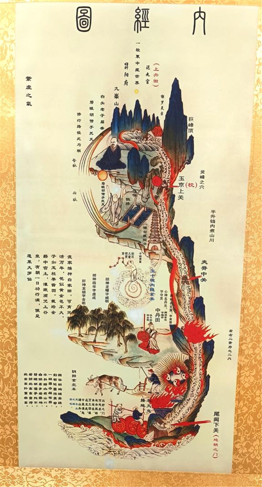

數年用心研究 · 親身見證奇蹟 · 醫學權威認證 · 古今智慧融合
The Starting Point: Huangdi Neijing (Yellow Emperor's Classic of Medicine)

Years of Dedicated Research & Personal Experimentation
Two Extraordinary Real-Life Cases That Changed Everything
Biological Age vs Chronological Age — Real Case Comparison
Sponsored Clinical R&D · Endorsed by Medical Professionals
The Culmination: 7D Anti-Aging System
經過數年親身見證研究，贊助研發臨床，得到多名醫生及醫學教授支持